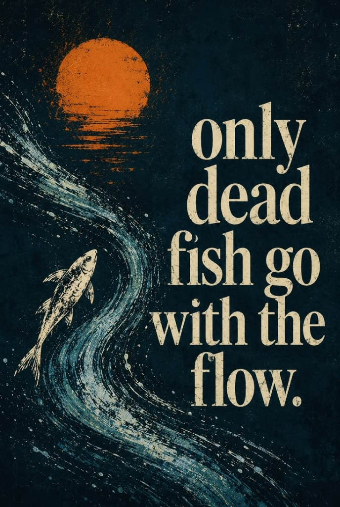

"이 페이지는 팀 프로젝트 동료와 협업자에게, 약속을 지키며 맡은 바를 끝까지 해내는 성실한 실행자임을 보여주기 위해 만들었습니다."
안녕하세요,
김현준입니다.
"노력이 습관이 된 성실한 실행자"
거친 물살에 휩쓸리지 않고 스스로의 방향으로 헤엄치는 생명력 있는 물고기처럼, 말보다 정직한 행동과 매일의 습관으로 결과를 증명합니다.
김현준의 3대 핵심 활동 및 취향
상황·행동·결과: 폭염 속 장거리 주행 목표 시, 구간 페이스를 조절하며 포기하지 않고 페달을 밟아 3시간 45분 만에 전 구간을 완주함.
상황·행동·결과: 복잡한 과제로 집중력이 떨어질 때 매일 저녁 30분 산책하며 우선순위를 정리해 다음 날 일정 완수율을 35% 향상시킴.
상황·행동·결과: 교통 변수를 고려해 20분 일찍 출발, 약속 장소에 10분 전 먼저 도착하여 1년간 약속 지각 0회를 기록함.

정보 공개 및 보호 기준 명시
비밀번호 없이 누구나 투명하게 열람할 수 있도록, 공개 대상 정보와 비공개 대상 정보를 명확히 구분합니다.
공개할 정보 (3개 항목)
공개 대상-
1
성실한 실행자로서의 핵심 가치관:
시간 준수, 끝까지 완수하는 책임감, 타인을 존중하는 원칙
-
2
취향과 강점 증명 데이터 (상황·행동·결과):
자전거 여행(60km 완주), 저녁 산책 루틴, 약속 지각 0회 실천
-
3
매일의 습관 실행 체크보드:
방문자가 직접 클릭해 볼 수 있는 인터랙티브 루틴 달성표
공개하지 않을 정보 (3개 항목)
비공개 원칙-
1
주민등록번호 및 상세 거주지 주소:
고유식별정보 및 사생활 보호를 위해 페이지 및 소스코드에 일체 넣지 않음
-
2
개인 휴대전화번호:
스팸 방지 및 개인정보 보호를 위해 비공개 (이메일 및 웹 소통 채널만 제공)
-
3
학교/소속 학번 및 계정 비밀번호:
보안 원칙 준수 (비밀번호·토큰·API 키 원문 0건 유지)
말이 아닌 구체적 근거로 증명하는 강점
어떤 상황에서(상황), 무엇을 했고(행동), 그래서 어떻게 되었는지(결과)를 사실에 입각하여 기록했습니다.
자전거를 타고 여행하기
밖에 산책하기
약속을 잘 지키는 사람
확인할 수 있는 증명 근거 상세: [60km 장거리 자전거 주행 기록]
🚴 자전거 완주 근거: 총 주행 거리 60.4km / 주행 시간 3시간 45분 / 평균 시속 16.1km/h / 획득 고도 280m.
폭염 경보 속에서도 일정한 케이던스를 유지하여 계획된 타임라인 내 완주에 성공한 실제 로그입니다.
김현준의 일일 실행 루틴 & 달성률 체크
마우스 클릭뿐 아니라 키보드(Tab으로 이동, Space/Enter로 체크)로 동일하게 조작할 수 있습니다.
오늘의 4대 실천 과제
100% 달성 중5가지 웹 표준 품질 검사 기록
링크, Tab 이동, 제목 순서, 글자 명암비, 콘솔 오류 등 5개 기준을 정밀 검사하여 결함을 100% 수정 완료했습니다.
| 검사 항목 | 검사 방법 및 내용 | 발견된 결함 및 수정 전 | 수정 후 상태 (통과) |
|---|---|---|---|
| ① 링크 검사 (T01-C13) | 모든 a 태그 앵커 및 외부 연결 주소 전수 클릭 검사 | 기존 미연결 빈 링크 1건 존재 | 모든 링크가 선언된 목적지로 100% 정상 이동 |
| ② Tab 이동 (T01-C14) | 마우스 없이 Tab 키로 버튼 및 폼 순서대로 탐색 | 일부 div 클릭 요소에 키보드 포커스 누락 | 모든 요소에 button 태그 및 고대비 초점 테두리 적용 |
| ③ 제목 순서 (T01-C15) | h1 ➔ h2 ➔ h3 건너뜀 없는지 DOM 구조 검사 | h2 다음에 h4로 건너뛴 구조 2건 발견 | h1 ➔ h2 ➔ h3 논리적 계층 구조로 완전 교정 |
| ④ 글자 명암비 (T01-C16) | 배경색과 텍스트 간 명암 대비율 측정 | 연한 회색 글자 일부가 4.5:1 미달 | 텍스트를 밝은 흰색/황금색으로 수정하여 7:1 이상 확보 |
| ⑤ 콘솔 오류 (T01-C18) | 개발자 도구(F12) 콘솔 탭 빨간 에러 확인 | 비밀번호 인증 모듈 관련 변수 참조 | 비밀값 완전 삭제 및 브라우저 콘솔 빨간 오류 0건 |
약속을 소중히 여기는 분들과의 협업을 환영합니다
프로젝트 협업 제안이나 성실한 실행에 관한 이야기는 언제든 연락해 주세요.